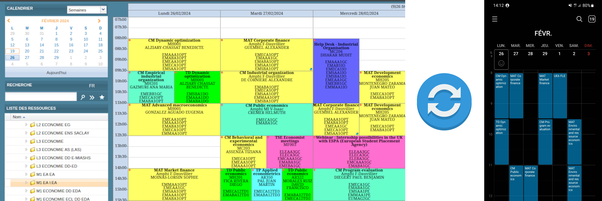

TSE Calendar Sync and Filter
A tool to synchronise personalised Toulouse School of Economics timetables to your calendar app

TSE Calendar Sync
This web page is to help students at the Toulouse School of Economics (TSE) synchronise their class timetable to their phone (or Google calendar). Although this will work for all Université Toulouse Capitole students.
You can normally view all classes for your course in a browser here. However sometimes classes are cancelled within an hour of them happening. Syncing to your device would be nice to help you notice this. Additionally, the web page calendar includes electives you're not taking. You can view a somewhat personalised timetable here. However that includes TPs, TDs etc which are not your ones. The purpose of this page is to generate a new URL to put into your calendar app, such that you can filter out all the events you do not care about.
The way this works is that you type in the names of which course you're taking below, and this website will generate a new URL to put into your calendar app, which is the same as here, but with some events discarded.
The other issue is that the university calendar website is quite unreliable. Often it just won't load for a few hours. With my server in between your phone and the university's unreliable server, I can fetch updates frequently (on behalf of everyone), and cache the results so it's reliable when your phone tries to sync.

There are two ways you can use this tool. Either you can delete everything except just the classes you care about. Or you could delete only the classes you're sure you don't care about.
As an example to show the difference, suppose you choose to hide everything except events for "Industrial Organization". You think you're seeing all your classes in your timetable. But then TSE organises a new class (perhaps a mid term exam?) and they name the event "Industrial Organisation". (Note the different spelling. Yes this is something that that happens.) By including only "Industrial Organization", you don't see "Industrial Organisation" classes. (This is just one example.)
Results
Your URL is:
Installation Instructions
This URL is not a normal "CalDav" calendar sync link.
It's actually a .ics file download.
So some apps (e.g. your browser) will try to download it as a file,
and then from there you can import it into a calendar app.
The problem there is that this is a once-off process, and updates to your timetable by the university will not be synchronised.
To ensure updates are synchronised, try the following steps, based on your target device:
If your calendar tool lets you choose the synchronisation frequency, feel free to choose some very frequent polling frequency (e.g. 30 minutes). The requests go to my server, not the university. My server will just served cached results, which it updates from the university every few hours. (If this service becomes popular I'll increase that to hourly. But even if 100 students use this, only 1 request gets sent to the university server per course. Their server is super slow and unreliable. But I've worked hard on caching, retries and exponential backoff to mitigate this for the end user, whilst minimising load to their server.)
Note that if you want each subject to appear as a different colour in your calendar app, you can use this web page to generate a unique URL for each subject, using each subject name as the keywords. Then once you have many calendars in your calendar app, set a different colour for each one.
Don't put too much faith in this tool. It might be imperfect. e.g. for exams, check your schedule manually in a web page (or the emailed PDFs.)
Update
If you have been synchronising successfully, but then you release that you need to modify your keywords, you can paste your URL from last time into the following field, which will populate the input fields above. Then you can adjust, and copy the updated URL. (For some installation targets you will need to add the URL as a whole new calendar and then delete the old one.)
Privacy and Security
UT1's calendars are public anyway. That's what I use (not your personal calendar). You do not need to give your password to me to use this service. This service gives you a filtered version of the public calendars.Technical Implementation Details
If you're curious how this works, here's an explanation. The code can be found on GitLab.
UT1's public calendar web page is here.
Inside that URL there's a part like showOptions=false. If you change that to showOptions=true then new buttons appear down the bottom left,
which you can use to generate the URL for the full, unfiltered calendar.
You can pop this straight into your calendar app if you want.
But the UT1 server is dreadfully unreliable. It fails (e.g. 500 errors) for at least 1 in 4 requests.
Even when it works, it's very slow (up to 30 seconds to download the calendar, which may be longer than the client's timeout configuration.)
The URL generated by this web page does not start with https://ade-production.ut-capitole.fr.
Instead it's like https://something.lambda-url.eu-west-3.on.aws.
This domain points to my server running in Amazon's cloud (AWS).
My server in the middle is a proxy which caches the calendar file,
and performs filtering of the events within it on the fly.
Except it's not a traditional server, it's an AWS Lambda Function exposed with a function URL. This means that instead of paying for a server to run 24x7, I just give Amazon a zip of my python scripts, and when someone's device accesses the URL, they assign a server from their fleet to run my code, serve the response, and then that server is deleted, all within hundreds of milliseconds. I don't have to worry about patching, scaling etc.
There's a second lambda, which polls the UT1 server for the raw calendars (scheduled with a Step Function, to have very slow backoff and retries, since the UT1 server is so unreliable.)
This saves the raw calendars as .ics text files in AWS S3, as the cache.
(We can download the calendar file now. But maybe later when a user requests it, the UT1 server will be down. Then I'll just serve from the cache.)
There's a lifecycle configuration rule to delete all files in S3 after a while. (This is how I erase stale entries from the cache.)
Every time someone requests a new calendar (e.g. the first M2 PPD student) the raw ade-production.ut-capitole.fr URL will be added to DynamoDB.
Then next time we poll the server, a Step Function will loop over these DynamoDB rows to figure out which files to download.
These rows have a TTL value, that gets updated every time a request is made.
Thus if all users of a given calendar (e.g. all M2 PPD students) stop using my service, after a few weeks I'll stop polling the UT1 server for that calendar, so reduce their server load.
(And my cloud bill, but that's negligible.)
Note that by caching the unfiltered files and filtering on the fly, we can do a single download to serve multiple users. e.g. if you have many calendar URLs, one for each subject, your device will make a request for each, which will all hit the same cache in S3. Thus the UT1 server only gets one request per user per course (e.g. all M1 students), not one per user or one per user per filter keyword set.
The project is deployed with AWS SAM, composed of a few "serverless" resources. I haven't used SAM before. It's surprisingly easy to use. I've found that AWS Lambda URLs are shockingly simple and cheap. (Unpopular opinion: Lambda URLs are no less secure than using API Gateway or a custom WAF. You can even add IAM authentication if you want.) I have aggressive maximum concurrency and timeouts set on the exposed lambda to mitigate DOS attack cost. The application code is written in Python. This web page is all lightweight hand-crafted vanilla HTML, CSS, JavaScript (No frameworks) hosted for free with GitHub pages. (This web page just does string manipulation to generate the URL. It doesn't actually interact with the Lambda functions and python code.)
Conclusion
If you have any feedback about this web page and service, please let me know. I'm Matthew Davis, the Australian M1 student who asks lots of questions in class. I used to do this kind of coding for a living. That's how I know how to do this. Yes I spent more time writing this than I saved by not manually checking my timetable in a browser each day. But I enjoy coding, so this time wasn't a 'cost'.